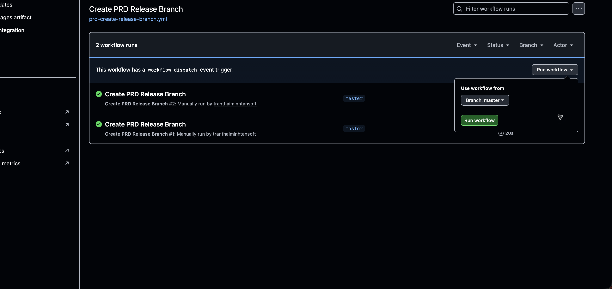
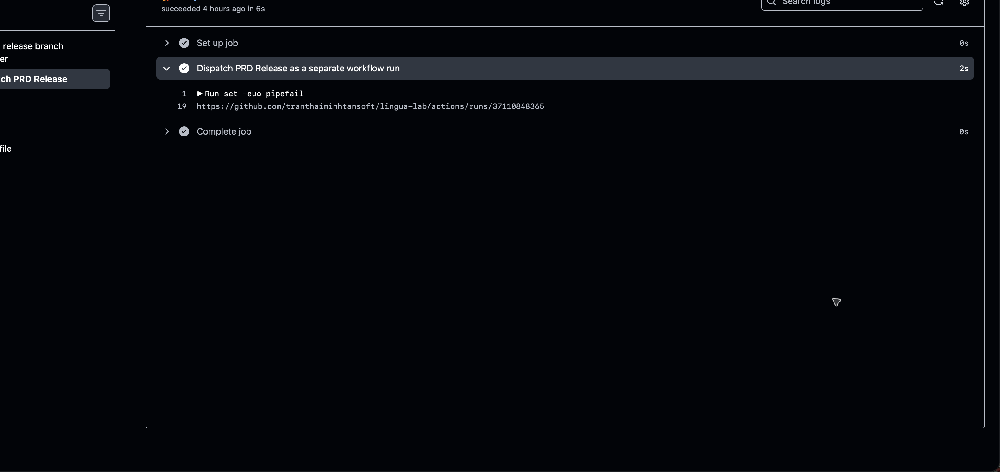
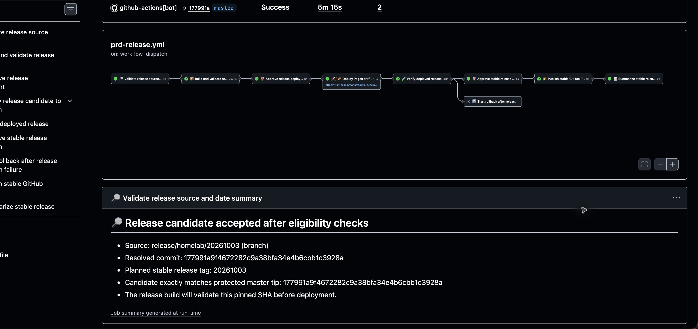
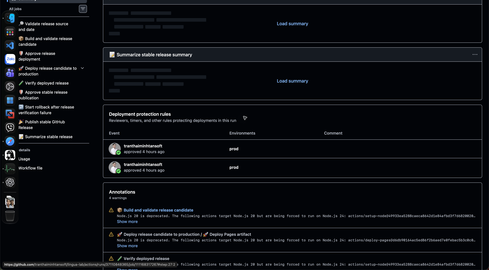

Run workflow
Workflow: Create PRD Release Branch
Click
Run workflow→ confirmBranch: master(default; do not change) → click greenRun workflow.
Confirm masterbefore running.Open PRD Release
Trigger run Success → open Dispatch PRD Release → expand Dispatch PRD Release as a separate workflow run → click the Actions URL in the log.

This opens the child PRD Release run, not the trigger run. Example trigger run #37110833514. Confirm candidate
candidate_refmust berelease/homelab/YYYYMMDDfor the release date. Example: 4 October 2026 →release/homelab/20261004.Confirm the pinned commit SHA matches the approved commit.

Recorded example from PRD Release #6: release/homelab/20261003. Use the current release date, not this past run.Approve candidate (prod gate 1)
When Approve release candidate waits → run Summary → Review deployments → select
prod→ Approve and deploy. Confirm the approval job succeeds. Build starts after approval.Deploy and verify
Wait for Build release candidate: Success → Deploy Pages artifact: Success → open the returned URL and Verify deployed release.
Payload GitHub Actions — where to confirm Pages site: app + standalone docs Run → Deploy release candidate to production → Deploy Pages artifact: Success. Copy its Pages URL. release-identity.jsonRun → Verify deployed release → Production verification summary → Deployed build identity matches candidate: Passed; SHA matches the pinned candidate. Production routes Same summary: Homepage, Nihongo, Kana, Grammar, Vocabulary, both First introductions topics and Grammar Question types topic: Passed, including direct open and refresh. Navigation / redirect Same summary: all Navigation: Home → Nihongo checks and Legacy Kana redirect and refresh: Passed. Deployed files Deployed files match candidate SHA-256 manifest: Passed; every candidate file matches. Docs Standalone documentation and internal links + Documentation images and diagrams: Passed; 10 pages, 4 screenshots, 3 diagrams. Browser errors Browser JavaScript errors + Browser JS/CSS loading: Passed. Grammar questions Same summary: all four Grammar question checks: Passed. Confirm 17/17 types for content/accordions, deep links/refresh and 360px mobile layout; navigation and related links pass. Kana practice Kana random: all practice glyphs, Kana stroke guides: all practice glyphs, Kana speech controls: simulated Japanese voice, Kana speech fallback and recovery: Passed; 142/142 glyphs. Rollback archive + SHA-256 Not deployed to Pages. After gate 2, open the dated GitHub Release → Assets; confirm site-dist.tar.gzandsite-dist.tar.gz.sha256.Failure details: Run → Artifacts → production-verification → JSON results and screenshots. Do not approve gate 2 if any check fails.
Approve stable publication (prod gate 2)
Before approval: open the deployed Kana page in Safari → Random → Play → confirm audible Japanese matches the displayed glyph → change speed → Stop. Check both Hiragana and Katakana. Record browser/device and result; automatic speech checks use a simulated voice.
Only after Verify deployed release: Success and the audible playback check passes → Approve stable release publication waits → Summary → Review deployments → select
prod→ Approve and deploy.Run → Deployment protection rules: confirm two
prodapprovals—one per gate.
Actual PRD Release #6: both prodapprovals appear under Summary → Deployment protection rules, one for each gate.Finish
Confirm stable publication succeeds and a GitHub Release URL appears. Continue to Post-release.
If any step fails, stop and follow Rollback.
Gate 1: stop if the candidate branch or commit SHA is missing or unexpected. Gate 2: do not approve unless deployed verification passes.